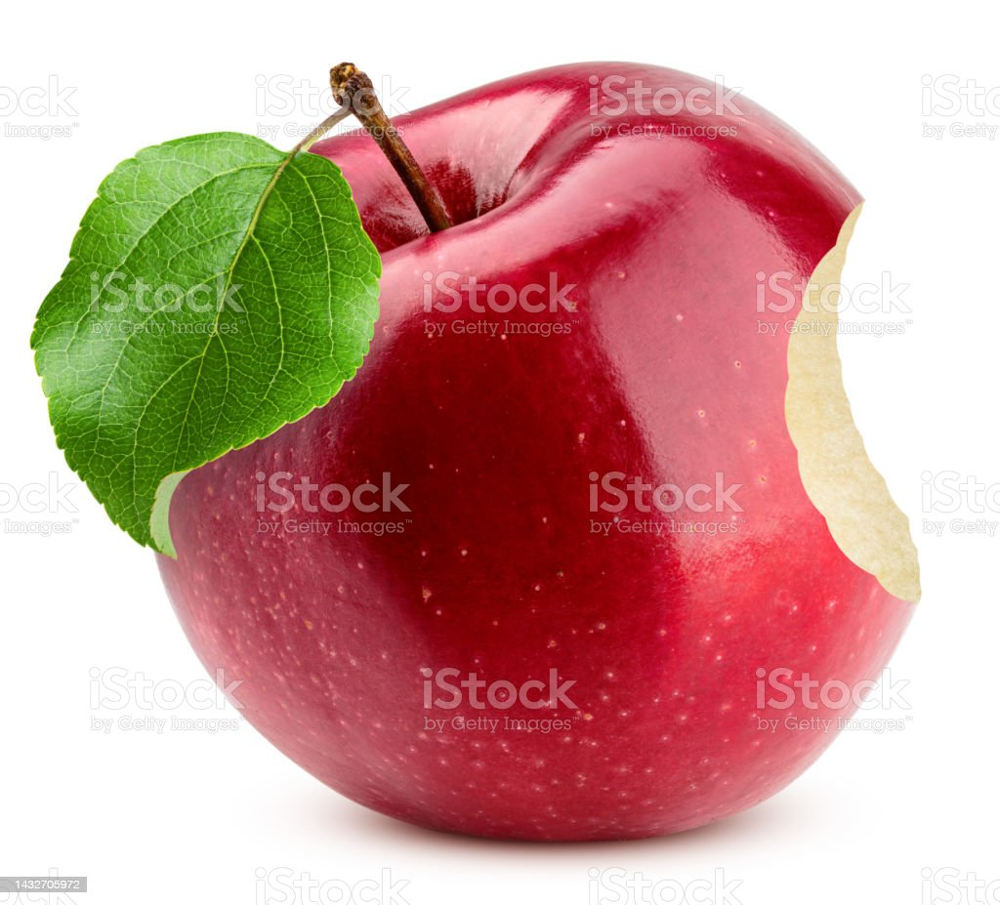
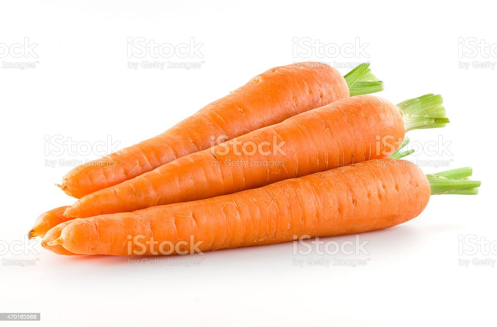
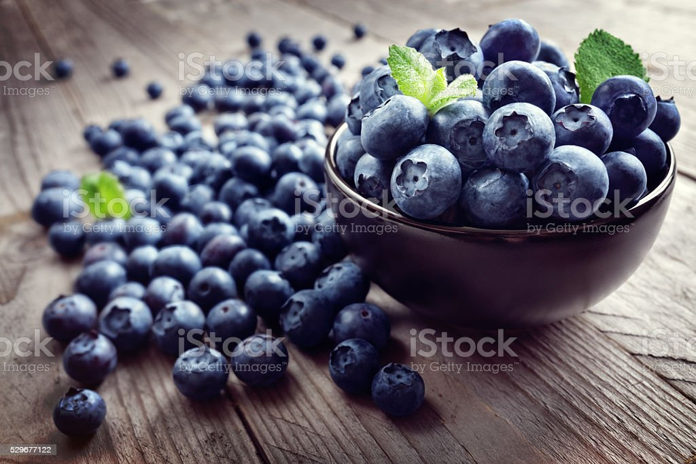
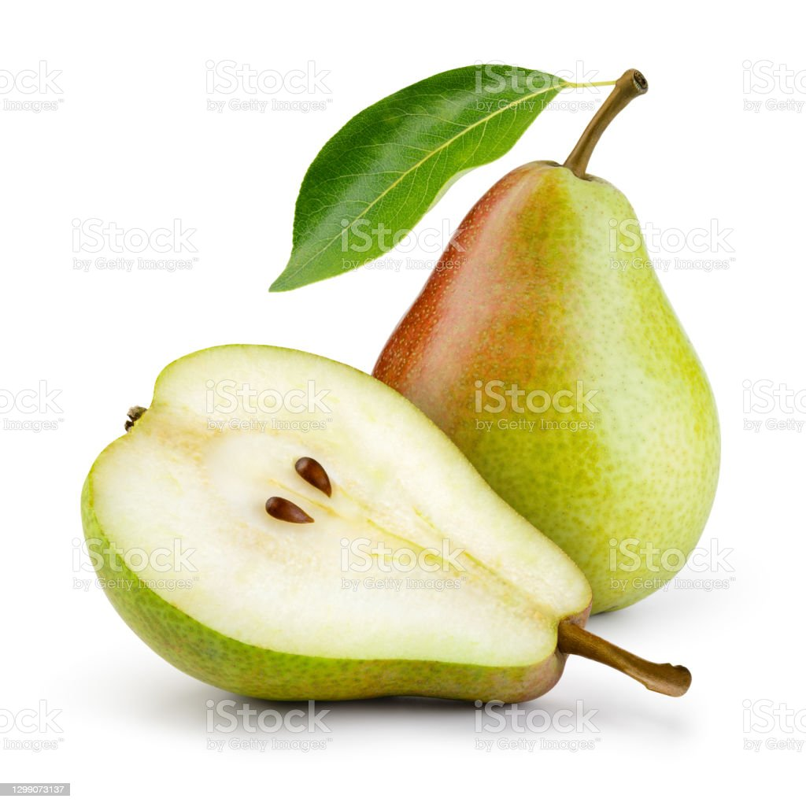

round fruit with a firm, juicy flesh and a stem on the top

long, slender, and typically orange-colored root vegetable with a crisp texture and sweet flavor

small, round, dark-blue fruit with a sweet flavor that grows on a bush.

sweet, juicy, and typically bell-shaped fruit with a green or yellowish skin and a firm, slightly grainy flesh.
I recently discovered this amazing eco-friendly food website and I couldn't be happier with my experience.
Not only do they offer a wide selection of organic and locally sourced produce, but they also provide valuable information about sustainable farming practices and the environmental impact of food choices. I love how easy it is to make conscious decisions with their help, and their recipes are always delicious and healthy.
I highly recommend this website to anyone looking to eat more sustainably and to reduce their carbon footprint.
Jackque, long time customer
Call to action! It's time
Sign up for our product by clicking that button right over there